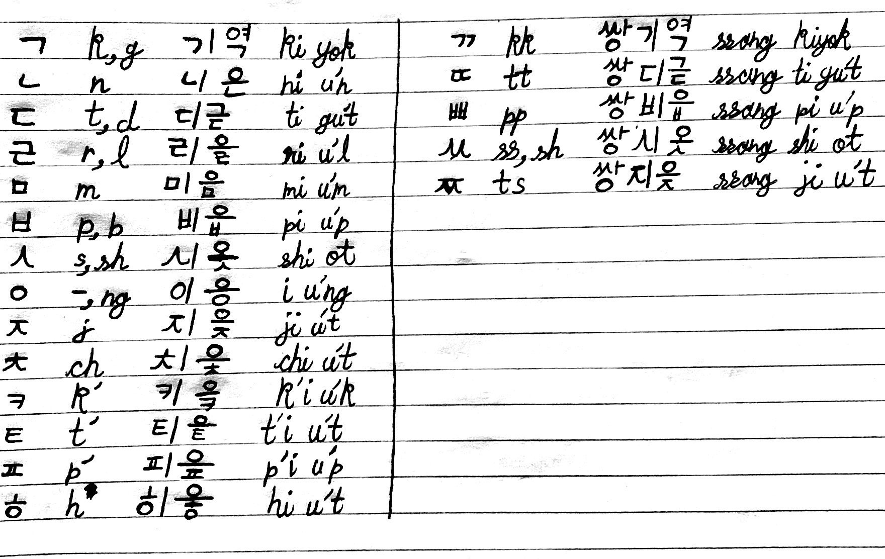
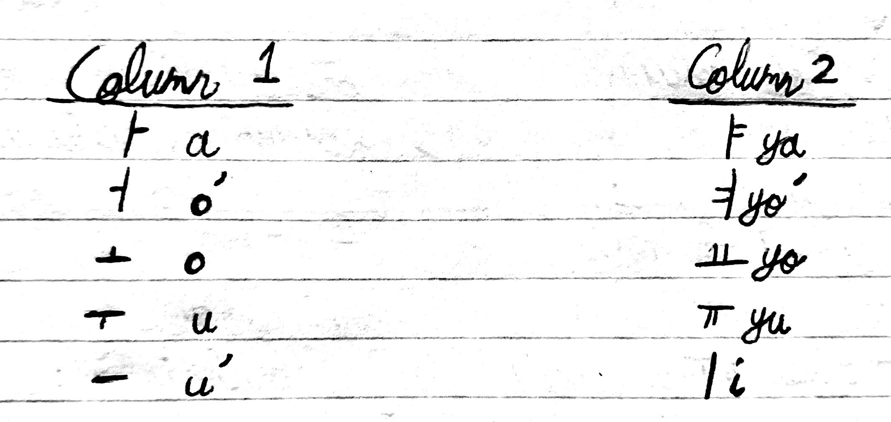

Hangul: Full List of Reading Rules in Korean (youtube.com/watch?v=4ItnWxGxFIw)
- ㄱ = g, k; ㄷ = d, t; ㅂ = b, p:
- g, d, b: between vowels
- k, t, p: all other cases
- 가구 kagu (furniture)
- 두다 tuda (to put)
- 곧 kot
- 받침 patchim
- 바보 pabo
- 밥 pap
- ㄹ = r, l:
- r: first letter, or between vowel sounds
- l: last letter
- 로마 roma
- 나를 noru'l
- 팔아요 parayo
- ㅅ = s, sh; ㅆ = ss, sh:
- s, ss: If before column 1 vowels (ㅏ, ㅓ, ㅗ, ㅜ, ㅡ)
- sh: If before column 2 vowels (ㅑ, ㅕ, ㅛ, ㅠ, ㅣ)
- 사람 saram (person)
- 시간 shigan
- 쓰다 ssu'da (to write, to use, to wear)
- 날씨 nalshi (weather)
- ㅇ = -, ng:
- -: when placed right before vowel
- ng: last letter
- 일 il
- 공 kong

